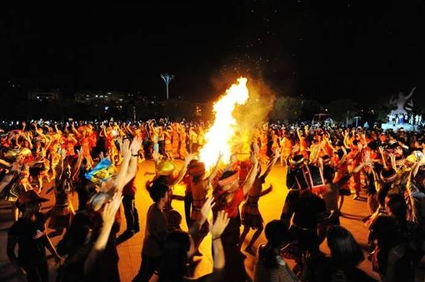
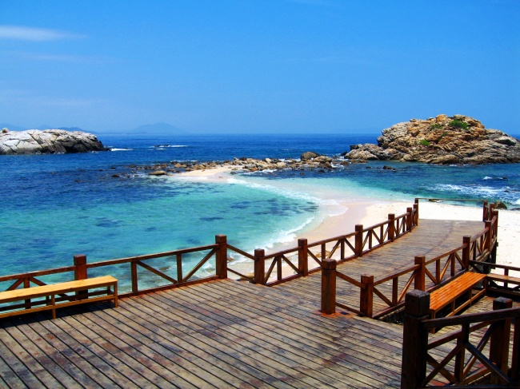
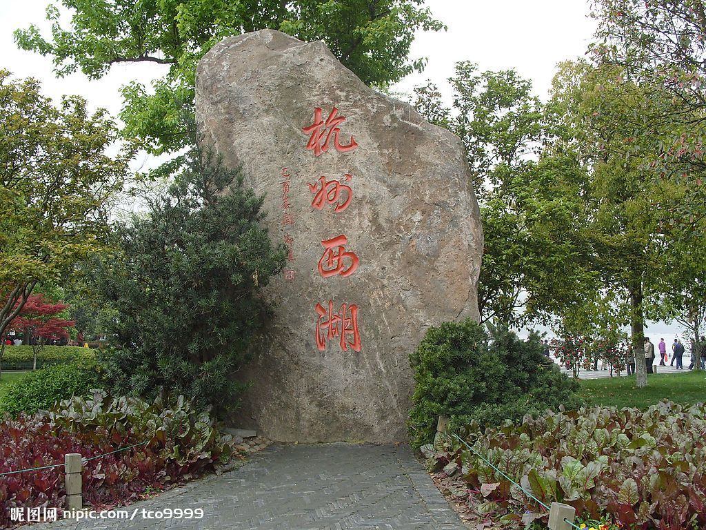

| 丽江 |  | 丽江自古就是一个多民族聚居的地方,共有12个世居民族,其中纳西族23.37万人,彝族20.14万人,傈僳族10.62万人。其中纳西族占古城区及玉龙县(即原丽江县)总人口的57.7%。并且著有“国中贵原,云中丽江”。 束河古镇:束河八景夜市萤火、龙门望月、雪山倒映、断碑敲音、鱼水亲人、西山红叶、石莲夜话、青龙桥。束河位于云南丽江城北,是纳西族先民最早的聚居点,也是木氏上司的发祥地。这里古迹荟萃,沿柏油马路向雪山方向行驶,约五公里处左转,进入一碎石路段,再前行约2公里,你便可以见到一个古老的村落,这就是束河,又名龙泉村。沿束河街北走100米,便可找到溪流的源头“九鼎龙潭”。潭水透明清澈,日夜涌泉,束河人奉为神泉,于是建有北泉寺。寺内陈设与古城其它寺院没有什么区别,倒是源边临水一角,有一个“三圣宫”楼阁,为传统四合院,里面供奉的皮匠祖师。v |
| 三亚 |  | 三亚是具有热带海滨风景特色的国际旅游城市[4]，又被称为“东方夏威夷”。2016年6月14日，中国科学院对外发布《中国宜居城市研究报告》，三亚宜居指数在全国40个城市中位居第三。2016年9月，三亚入选“中国地级市民生发展100强。2017年2月，三亚入选第三批国家低碳城市试点之一。三亚也是同时入选中国特色魅力城市200强及世界特色魅力城市200强。 |
| 西湖 |  | 西湖三面环山，面积约6.39平方千米，东西宽约2.8千米，南北长约3.2千米，绕湖一周近15千米。湖中被孤山、白堤、苏堤、杨公堤分隔，按面积大小分别为外西湖、西里湖、北里湖、小南湖及岳湖等五片水面，苏堤、白堤越过湖面，小瀛洲、湖心亭、阮公墩三个小岛鼎立于外西湖湖心，夕照山的雷峰塔与宝石山的保俶塔隔湖相映，由此形成了“一山、二塔、三岛、三堤、五湖”的基本格局。 |